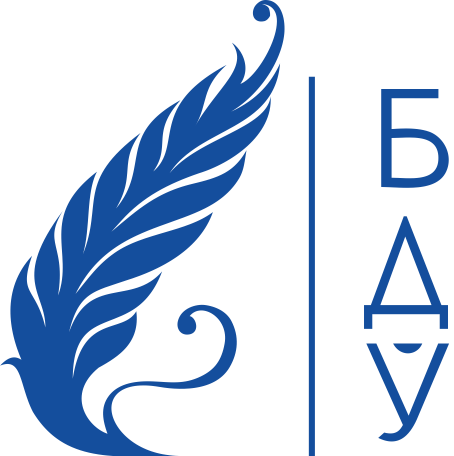

Master's degree
Магистрант ФМО БГУ
Андриевич Анна Дмитриевна

Автобиография
Магистрант Белорусского государственного университета Факультета международных отношений
Cпециальности "История международных отношений и внешней политики", 2017-2018 гг.
Специалист по международным отношениям
Переводчик-референт со знанием двух иностранных языков (английский, испанский)
Сфера научных интересов - Американо-мексиканские отношения на современном этапе развития в XXI в.
Ссылки:
Выпускная работа
Презентация
Научный руководить: Розанов А.А.